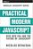
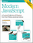
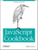
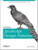
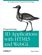
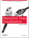
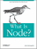
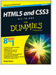

|
FreeComputerBooks.com
Free Computer, Mathematics, Technical Books and Lecture Notes, etc.
|
Free Industry Resources |
| NSS Labs Advanced Endpoint Protection Test Report: NSS Labs performed rigorous testing of McAfee Endpoint Security v10.5 across a multitude of attack... |
| The Unrealized Promise of Analytics (and How Data Governance Can Help): Explore the link between data governance and analytics, and discover why good... |
| Flash Architecture Comparison: NetApp AFF vs. Dell EMC XtremIO: This analysis examines five essential criteria to consider when evaluating flash storage... |
| Follow the Trail to the Right Estimating Software: As you start up the trail towards new estimating software, think about the way you're estimating now.... |
Free Industry Resources |
| Flash Architecture Comparison: NetApp AFF vs. Dell EMC XtremIO: This analysis examines five essential criteria to consider when evaluating flash storage... |
| NetSuite Powers the Best-of-the-Best Services Organizations: This white paper examines how leading service providers succeeded despite overall market... |
| Redefining Data Governance: Think you know data governance? Think again. Download the white paper to see why.... |
| 2017 UPS Pulse of the Online Shopper™-A Mobile Mindset: The 2017 UPS Pulse of the Online Shopper™ survey reveals a changing retail landscape... |

-
WebGL Insights (Patrick Cozzi)
This book shares experience-backed lessons learned by the WebGL community. It presents proven techniques that will be helpful to both intermediate and advanced WebGL developers. It demonstrates the breadth and depth of WebGL.
-
 Practical Modern JavaScript: Dive into ES6 and the Future
This book gets you started, bringing together concepts that are helpful to understand before tackling your next modern JavaScript app. You'll learn about the scope and challenges that await you in the world of modern web development.
-
Exploring ES6: Upgrade to the Next Version of JavaScript
This book contains reliable and in-depth information on ECMAScript 6, the next version of JavaScript. If you are a JavaScript developer with basic development experience, and now want to learn about the latest features of JavaScript, then this book is for you.
-
Understanding ECMAScript 6 (Nicholas C. Zakas)
This book is a guide for the transition between ECMAScript 5 and 6. In particular, this book is aimed at intermediate-to-advanced JavaScript developers (both browser and Node.js environments) who want to learn about the future of the language.
-
ECMAScript 6 Succinctly (Matthew Duffield)
This book is a concise introduction to ECMAScript 6 (ES6). It teaches you how to develop applications using all of those ECMAScript 6 (ES6) new functionality and features. You can also target browsers that don't even support ES6 yet using a transpiler.
-
 O'Reilly® Modern JavaScript: A Curated Collection
This book gets you started, bringing together concepts that are helpful to understand before tackling your next modern JavaScript app. You'll learn about the scope and challenges that await you in the world of modern web development.
-
TypeScript Deep Dive (Basarat Ali Syed)
This book is an exploration of TypeScript, which is a superset of JavaScript. The first part of the book explains to you what TypeScript is and what it is used for. You will also learn how it is related to JavaScript.
-
O'Reilly® You Don't Know JS: ES6 & Beyond (Kyle Simpson)
It focuses on new features available in ECMAScript 6 (ES6), the latest version of the standard upon which JavaScript is built. It dives into trickier parts of the language that many JavaScript programmers either avoid or know nothing about.
-
O'Reilly® You Don't Know JS: Async & Performance (Kyle Simpson)
This concise yet in-depth guide focuses on new asynchronous features and performance techniques including Promises, generators, and Web Workers that let you create sophisticated single-page web applications and escape callback hell in the process.
-
O'Reilly® You Don't Know JS: this & Object Prototypes (Simpson)
This concise, in-depth guide takes you inside JavaScript's this structure and object prototypes. You'll learn how they work and why they're integral to behavior delegation a design pattern in which objects are linked, rather than cloned.
-
 O'Reilly® You Don't Know JS: Scope & Closures (Kyle Simpson)
O'Reilly® You Don't Know JS: Scope & Closures (Kyle Simpson)
This concise yet in-depth guide takes you inside scope and closures, two core concepts you need to know to become a more efficient and effective JavaScript programmer. You'll learn how and why they work, and how to use it, etc.
-
 O'Reilly® You Don't Know JS: Types & Grammar (Kyle Simpson)
O'Reilly® You Don't Know JS: Types & Grammar (Kyle Simpson)
This compact guide explores JavaScript types in greater depth than previous treatments by looking at type coercion problems, demonstrating why types work, and showing you how to take advantage of these features.
-
O'Reilly® You Don't Know JS: Up & Going (Kyle Simpson)
By learning the basic building blocks of programming, as well as JavaScript's core mechanisms, you'll be prepared to dive into the other, more in-depth books in the series and be well on your way toward true JavaScript.
-
O'Reilly® Speaking JavaScript (Axel Rauschmayer)
Speaking JavaScript helps you approach the language with four standalone sections. First, a quick-start guide teaches you just enough of the language to help you be productive right away.
-
 O'Reilly® JavaScript Cookbook (Shelley Powers)
This cookbook is chock-full of code recipes that address common programming tasks, as well as techniques for building web apps that work in any browser.
-
O'Reilly® JavaScript Enlightenment (Cody Lindley)
This short and digestible summary of JavaScript 1.5 (ECMA-262, Edition 3 specification) focuses on the nature of objects in JavaScript.
-
 O'Reilly® Learning JavaScript Design Patterns (Addy Osmani)
This book explore many popular design patterns, including Modules, Observers, Facades, and Mediators.
-
 O'Reilly® Programming 3D Applications with HTML5 and WebGL
With this book, you�ll learn hands-on how to take your website's production values to a new level by incorporating 3D models and animations, mind-blowing visual effects, and advanced user interaction.
-
O'Reilly® Dojo: The Definitive Guide (Matthew A. Russell)
This book gives you the most thorough overview of this toolkit available, and demonstrates how to tame Dojo's extensive library of utilities so that you can build rich and responsive web applications like never before.
-
O'Reilly® High Performance Browser Networking (Ilya Grigorik)
This book provides a hands-on overview of what every web developer needs to know about the various types of networks (WiFi, 3G/4G), transport protocols (UDP, TCP, and TLS), application protocols (HTTP/1.1, HTTP/2), and APIs available in the browser.
-
O'Reilly® Web Audio API (Boris Smus)
Introduceing you to digital audio concepts, then shows you how the Web Audio API solves specific application audio problems. You�ll not only learn how to synthesize and process digital audio, you�ll also explore audio analysis and visualization with this API.
-
 Eloquent JavaScript, 2nd Edition: A Modern Introduction
Eloquent JavaScript, 2nd Edition: A Modern Introduction
Eloquent JavaScript, 2nd Edition dives deep into the JavaScript language to show you how to write beautiful, effective code. It immerses you in example code from the start, while exercises and full-chapter projects give you hands-on experience.
-
Building Front-End Web Apps with Plain JavaScript (Gerd Wagner)
This book shows how to build front-end web applications with plain JavaScript, not using any (third-party) framework or library. A front-end web application can be provided by any web server, but it is executed on the user's computer devices.
-
Human JavaScript: For Simple but Powerful JavaScript Apps
This is a book about a specific set of JavaScript tools, patterns, and approaches that we feel are optimized for people. These approaches enable our team to quickly build and deliver high-quality JavaScript applications for humans ...
-
Next Generation HTML5 and JavaScript (InfoQ)
JavaScript is chaotic. The pace of change is faster than ever and it seems like a new framework or important library pops up every couple of weeks. A major shift in the language is about to hit when ECMAScript 6 is finalized this year.
-
Modern Web Essentials Using JavaScript and HTML5 (David Pitt)
This book provides tools for a thorough understanding of three topics integral to effective enterprise-level, web SPA development: JavaScript language essentials, HTML5 specification features, and responsive design principles.
-
HTML5 Canvas: Native Interactivity and Animation for the Web
This book gets you started with HTML5 Canvas by showing you how to build interactive multimedia applications.
-
JavaScript Allong (Reginald Braithwaite)
This book teaches you how to handle complex JavaScript code, and it also teaches you how to simplify JavaScript code without dumbing it down.
-
JavaScript Essentials (Neil Smyth)
The purpose of this book is to provide the essentials of JavaScript so that anyone with a web site can use this powerful scripting language quickly and effectively.
-
O'Reilly® JavaScript and HTML5 Now (Kyle Simpson)
This insightful overview provides striking examples of how JavaScript and HTML5 have teamed up to give the Web a truly open platform.
-
HTML Canvas Deep Dive (Josh Marinacci)
A painstakingly crafted, expertly written, code-fueled, no-nonsense deep dive into HTML5 Canvas printed in full color with syntax-highlighted code listings throughout.
-
Sams Teach Yourself JavaScript in 24 Hours, 4th Edition
The book is written in a clear and personable style with an extensive use of practical, complete examples.
-
Developing Single Page Web Apps with Backbone.js (Prateek Dayal)
This book wants to show you how to build real world applications using Backbone.js. Unlike many books on backbone.js, this one is based on (and talks of) a real world application used by hundreds of companies and thousands of people.
-
Recipes with Angular.js (Frederik Dietz)
If you are using Angular.js, or considering it, this cookbook provides easy to follow recipes for issues you are likely to face. Each recipe solves a specific problem and provides a solution and in-depth discussion of it.
-
Express.js Guide: The Comprehensive Book on Express.js
This book is the in-depth, detailed, hand-on manual on Express.js, a web application framework for the most popular Node.js framework.
-
O'Reilly® Developing Backbone.js Applications (Addy Osmani)
This book provides all the information you need to create structured JavaScript applications using Backbone.js and its unique flavor of the MVC architecture.
-
Node.js Succinctly (Agus Kurniawan)
This informative e-book will take you from Hello World to �if�then� decisions, all the way to real-time data monitoring. You�ll learn how to use Node.js to build modules, declare JSON data objects, and create entire web-based applications.
-
 AngularJS Succinctly (Frederik Dietz)
AngularJS Succinctly (Frederik Dietz)
This book teaches how to design, and create reusable components in your single-page web application using Angular.js. It outlines common tasks and challenges for developers using Angular.js.
-
 O'Reilly® Interactive Data Visualization for the Web
This book introduces the D3.js JavaScript library that lets you express data as visual elements in a web page.
-
Twitter Bootstrap 3 Succinctly (Peter Shaw)
This book builds on Twitter Bootstrap Succinctly to provide up-to-date information on the latest version of the software. Developers will transition smoothly into the newest version of Twitter Bootstrap, which boasts an emphasis on mobile development.
-
Twitter Bootstrap Succinctly: Design Attractive, Consistent UIs
You'll learn how to add Twitter Bootstrap to an existing project, and use it to customize attractive buttons, tabs, breadcrumbs, dropdowns, and more. There are even chapters dedicated to optional JavaScript and extensions of Twitter Bootstrap.
-
O'Reilly® Programming JavaScript Applications (Eric Elliott)
It will take your existing JavaScript skills to the next level and learn how to build complete web scale or enterprise applications that are easy to extend and maintain.
-
D3 Tips and Tricks: Interactive Data Visualization in Web Browsers
This book is written to help those who may be unfamiliar with JavaScript or web page creation get started turning information into visualization using D3.js.
-
Leaflet Tips and Tricks: Interactive Maps with leaflet.js
This book will help you learn how to create maps with the Leaflet JavaScript library (leaflet.js) through a series of step-by-step recipes to achieve great dynamic and interactive slippy maps..
-
O'Reilly® The Little Book on CoffeeScript (Alex MacCaw)
This book shows JavaScript developers how to build superb web applications with CoffeeScript, the remarkable little language that's gaining considerable interest.
-
O'Reilly® Node: Up and Running - Scalable Server-Side Code
This book introduces you to Node.js, the new web development framework written in JavaScript.
-
The Node Beginner Book: A Comprehensive Node.js Tutorial
The aim of this book is to get you started with developing applications for Node.js, teaching you everything you need to know about advanced JavaScript along the way.
-
AngularJS Fundamentals In 60-ish Minutes (Dan Wahlin)
In this tutorial, you'll learn how to get started with the AngularJS framework and some of the key features it provides that simplify Single-Page Application (SPA) development.
-
O'Reilly® The Past, Present, and Future of JavaScript (Rauschmayer)
It explains how the combination of several technologies and opportunities in the past 15 years turned JavaScript�s fortunes.
-
O'Reilly® The Problem with Native JavaScript APIs (N. C. Zakas)
This report provides a case study to show how different browsers can develop native APIs for the same specification and still end up with different interpretations.
-
O'Reilly® JS.next: A Manager�s Guide (Aaron Frost)
This book educates JavaScript developers, from novice to expert, about the impact that ECMAScript 6 has had on the language, and demonstrates the powerful new constructs that are accessible in the ECMAScript 6 API.
-
TypeScript Succinctly: The .NET approach to JavaScript
This book teaches you how TypeScript provides optional static typing and classes to JavaScript development, how to create and load modules, and how to work with existing JavaScript libraries through ambient declarations.
-
TypeScript for C# Programmers (Steve Fenton)
This book is aimed at .NET programmers and explains key concepts as well as similarities and differences between TypeScript and C#.
-
Smooth CoffeeScript (E. Hoigaard)
This is a book about CoffeeScript and programming. No previous programming knowledge is required.
-
JavaScript: The Right Way (William Oliveira)
This free book is an easy-to-read, quick reference for JavaScript best practices, accepted coding standards, and links around the Web.
-
Knockout.js Succinctly (Ryan Hodson)
This book is intended for professional web developers who need to build dynamic, scalable user interfaces with minimal code using Knockout.js.
-
Testing with CoffeeScript (Jack Franklin)
It will guide you through the creation of a shopping cart system using unit testing and Behaviour-driven Development (BDD) with the popular framework Jasmine.
-
JavaScript Succinctly (Cody Lindley)
It gives readers an accurate, concise examination of JavaScript objects and their supporting nuances, such as complex values, primitive values, scope, inheritance, etc.
-
DOM Enlightenment (Cody Lindley)
This book explories the relationship between JavaScript and the modern HTML DOM, without the use of a library/framework.
-
jQuery Succinctly (Cody Lindley)
This book teaches web developers how to use jQuery. The book is targeted at somewhat experienced developers, who already know HTML, DOM, and JavaScript.
-
Backbone Tutorials (Thomas Davis)
This book aims to get developers up to speed with single page web application development using Backbone.js as a foundation.
-
Programming Windows 8 Apps with HTML, CSS & JavaScript
Apply your existing skills with HTML, CSS, and JavaScript�and start building your own Windows 8 apps now.
-
Building Android Apps with HTML, CSS & JavaScript, 2nd Edition
This hands-on book shows you how to use these open source web standards to design and build apps that can be adapted for any Android device - without using Java.
-
Mixu's Node Book: A Book About Using Node.js (M. Takada)
This book is an example-driven tutorial that starts at square one and goes through all the features, techniques, and concepts needed to build production-quality Node apps.
-
Gulp Succinctly (Kris van der Mast)
Gulp is an easy-to learn, easy-to-use JavaScript task runner that has become an industry standard. This book offers an entry to Gulp for experienced developers. With practical examples and clear descriptions, making it the perfect entry point.
-
jQuery Fundamentals (Rebecca Murphey)
You'll discover how the jQuery library separates itself from other JavaScript libraries through its ease of use, compactness, and friendliness.
-
WordPress and Ajax: An In-depth Guide (Ronald Huereca)
This e-book is a comprehensive view on using Ajax with WordPress. It covers Ajax like you've never seen before.
-
 O'Reilly® What Is Node? JavaScript Breaks Out of the Browser
This short book introduces you to Node.js, the new web development framework written in JavaScript.
-
 Building iPhone Apps with HTML, CSS, and JavaScript
Building iPhone Apps with HTML, CSS, and JavaScript
If you know HTML, CSS, and JavaScript, you already have the tools you need to develop your own iPhone apps.
-
Essential JavaScript and JQuery Design Patterns (Osmani)
This book will take a look at a number of popular JavaScript and JQuery design patterns and explore why certain patterns may be more suitable for your projects than others.
-
Google Maps API Tutorial (Mike Williams)
It will provide the reader with the skills and knowledge necessary to incorporate Google Maps version 3 on web pages in both desktop and mobile browsers..
-
The Web Book: Guide to HTML, CSS, JavaScript, PHP and MySQL
This book teaches you how to create web sites and applications with HTML, CSS, Javascript, PHP and MySQL.
-
Building A JavaScript Framework (Alex Young)
This book is a guide to building a JavaScript framework. It�ll teach you how to build a framework and draw on real-world code from projects like jQuery.
-
ppk on JavaScript (Peter-Paul Koch)
This book uses eight real-world scripts the author created for real-world clients in order to earn real-world money.
-
O'Reilly® Adobe Integrated Runtime (AIR) for JavaScript Developers
This book explains how you can use AIR to build and deploy HTML and JavaScript-based web applications to the desktop.
- HTML5 and CSS3 All-in-One For Dummies, 3rd Edition--Free Sample Chapters
A new edition of a bestseller covers the latest advances in web development!
 HTML5: The Evolution of Web Standards
HTML5: The Evolution of Web StandardsThis DZone Refcard highlights the major improvements and new features in HTML5 and illustrates the JavaScript APIs available to work with those features.
-
JavaScript and jQuery Programming
This is the previous page of JavaScript and jQuery Programming, we are in the processing to convert all the books there to the new page. Please check this page daily!!!
| A Guide to Private Cloud Security: Private cloud transformation, secured.... |
 |
|
|
|
|
|
|
|
|
|
|
|
|
|
|
|
|
|
|
|
|
|
|
|
|
|
|
|
|
|
|
|
|
|
|
|
|
|
|
|
|
|
|
|
|
|
.gif)